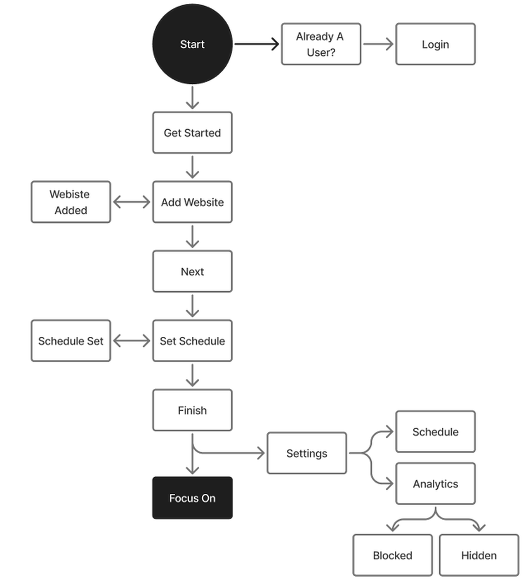
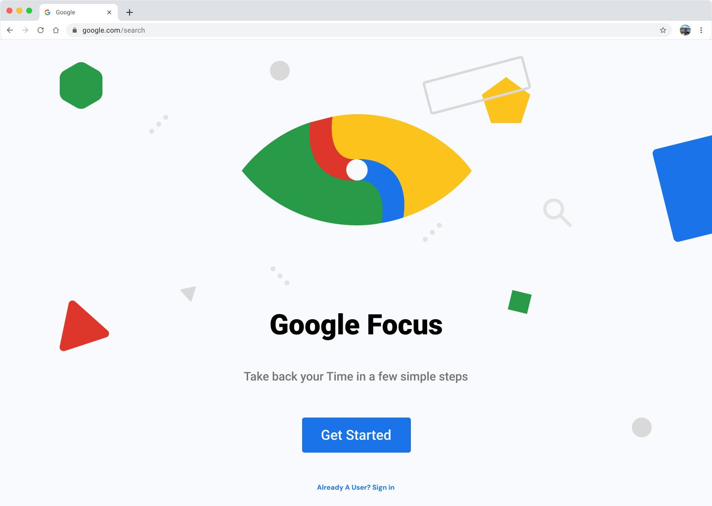
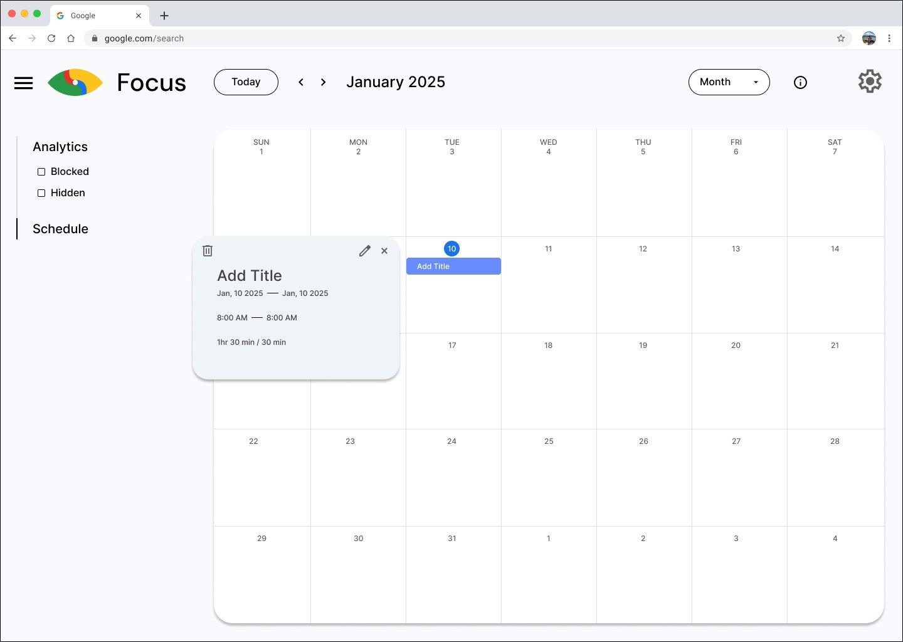
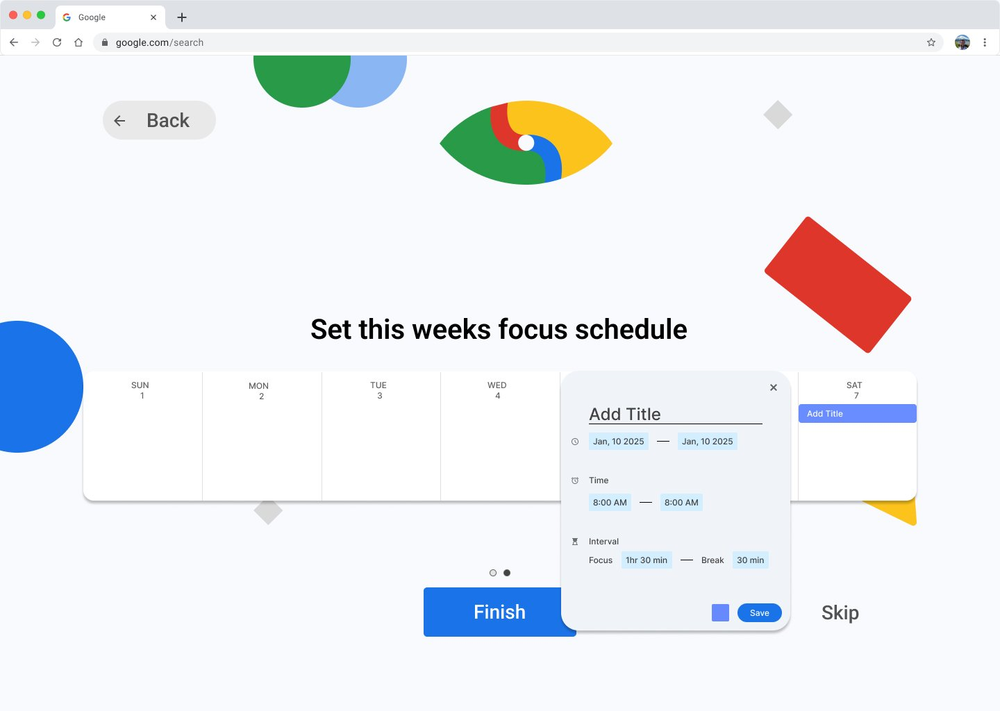
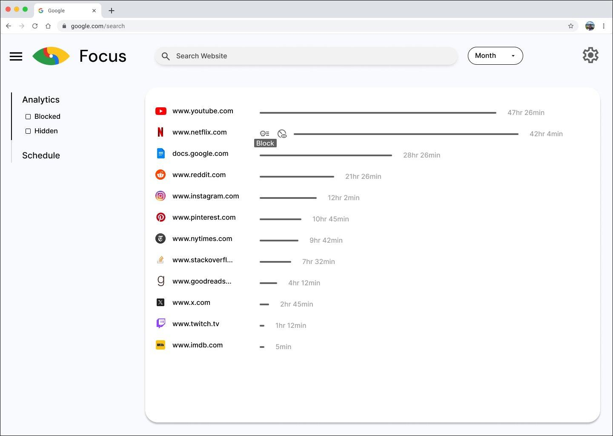

Name and Brand. Google maintains a consistent and minimalist approach to naming its products, often combining the word “Google” with a single descriptor that clearly defines the product’s purpose such as Google Docs or Google Maps.
Following this convention, Google Focus was named to directly communicate its primary function of helping users maintain concentration and reduce digital distractions. The name reflects Google’s straightforward branding philosophy, emphasizing clarity and intent.
Google’s visual branding is characterized by simple structures and the use of its iconic four color palette. Each product logo is distinct yet instantly recognizable as part of the broader Google ecosystem. In keeping with this design language, the logo for Google Focus incorporates the same color sequence and minimalist style. The logo’s central shape resembles an eye, symbolizing awareness and attention, reinforcing the product’s core purpose of helping users stay focused and mindful during screen time.
The extension. A Google extension introduces unique design challenges compared to a standard app or website. The limited space within the extension popup requires careful prioritization of content and functionality.
Only the most essential information and actions should be visible, while secondary elements are minimized or removed entirely. To address this, a settings button was added to allow users to adjust their preferences when needed, while the primary focus of the popup remains the toggle to turn Google Focus on or off quickly.
The initial user journey is intentionally longer to provide a thorough setup process that helps users customize their experience from the start. Once configured, the settings allow users to easily adjust which websites they want to block and specify the times those restrictions should apply, giving them full control over their focus routine.
The wireframe follows Google’s familiar “Get Started” flow, prompting users to input the websites they wish to block and set their preferred focus schedule. After the initial setup, the wireframe showcases the Google Focus extension interface, including the main popup design, settings menu, and a basic analytics view that provides insight into focus patterns and screen time reduction.
The initial extension design contained too much visual clutter, which distracted from the primary focus toggle and weakened the overall hierarchy. In addition, important customization options such as language preferences and general settings were not clearly visible.
To address this, a dedicated settings tab was introduced, providing users with an organized and accessible space to adjust their preferences without interfering with the main focus controls.




